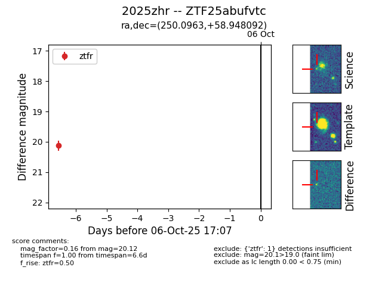

FINK: ZTF25abufvtc
Lasair: ZTF25abufvtc
ALeRCE: ZTF25abufvtc
TNS: 2025zhr
YSE: 2025zhr
ZTF25abufvtc (ztf,fink)
2025zhr (tns,yse)
equatorial (ra, dec) = (250.0963,+58.94809)
galactic (l, b) = (88.6028,+39.72285)

last ztfr=20.12
1 ztfr detections